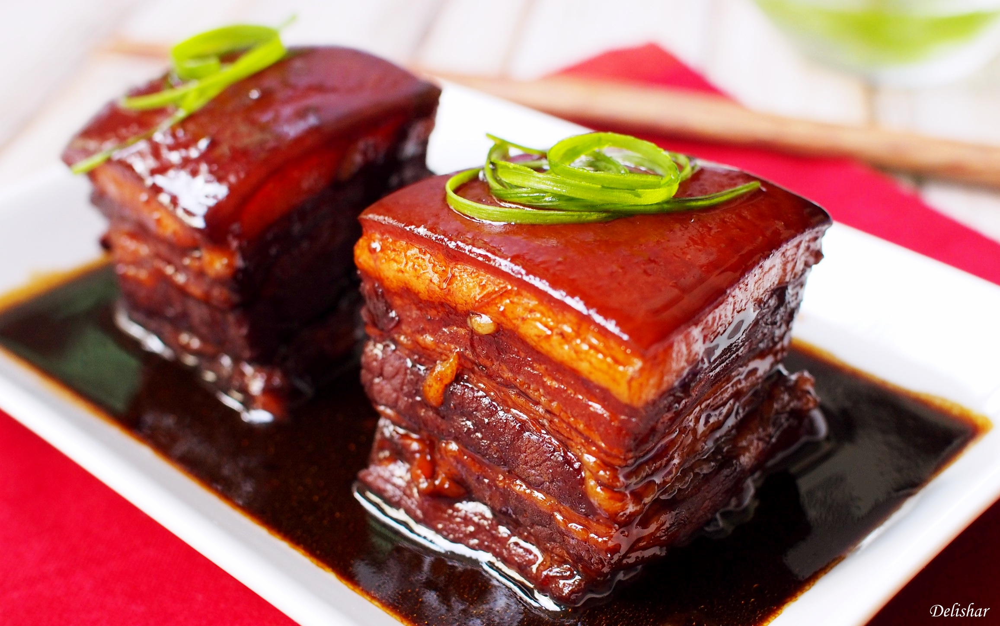

Dong Po Rou (Braised Pork Belly)

Here’s a classic recipe for Dong Po Rou (东坡肉) — a rich, melt-in-your-mouth Chinese braised pork belly dish named after the Song dynasty poet Su Dongpo:
Ingredients (serves 6–8):
- 2 lbs pork belly (cut into 2–3 inch cubes)
- 3 bunches scallions (layered at bottom of pot)
- 8 slices ginger
- 2 cups Shaoxing wine
- ⅔ cup light soy sauce
- 2½ tbsp dark soy sauce
- 5 oz rock sugar
Instructions:
- Prep the pork belly
- Blanch the whole slab in boiling water for 1 minute to remove impurities.
- Drain and cut into uniform cubes (2–3 inches).
- Layer aromatics
- In a clay pot or heavy-bottomed pot, lay scallions evenly across the bottom.
- Place ginger slices on top of scallions.
- Add pork and seasonings
- Arrange pork belly skin-side down over aromatics.
- Pour in Shaoxing wine, light soy sauce, dark soy sauce, and add rock sugar.
- Simmer gently
- Cover and bring to a boil over medium-high heat.
- Once boiling, reduce to low and simmer for 90 minutes without stirring.
- Finish cooking
- Flip pork skin-side up.
- Continue simmering for another 90 minutes.
- Alternatively, transfer to a steamer for the final 90 minutes for a restaurant-style finish.
- Serve
Optional:
- Optionally reduce the braising liquid into a glossy sauce.
- Drizzle over pork and serve with steamed rice or mantou buns.
Home